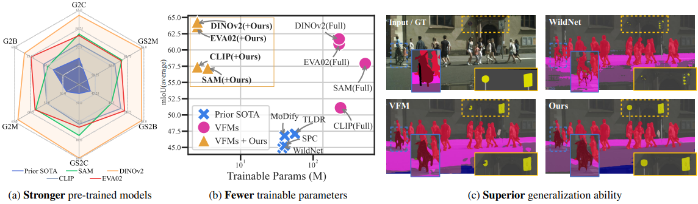
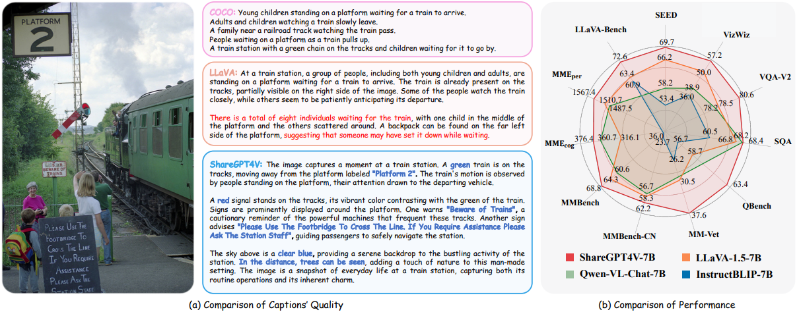
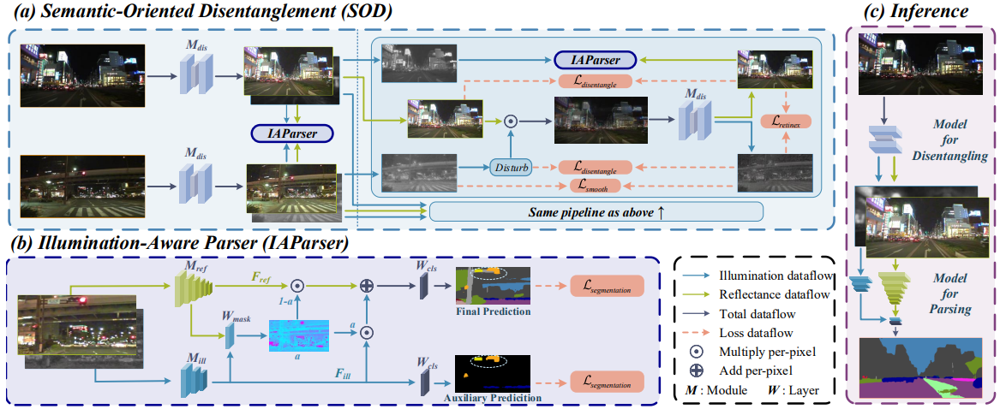
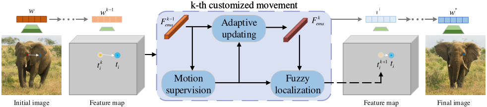
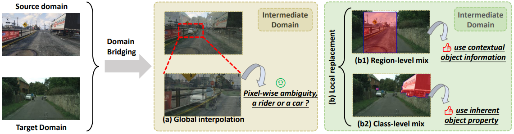
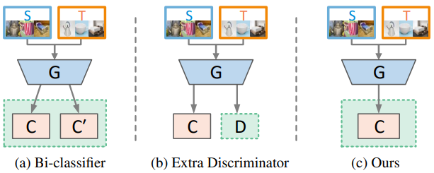

|
Greetings! I'm currently a PhD student in School of Automation, University of Science and Technology of China, advised by Prof. Feng Zhao. I got a B.E. degree at Anhui University in 2020 and join the high-level vision group at USTC-BIVLab. And I serve as an research intern in Shanghai AI Laboratory now, supervised by Dr. Jiaqi Wang and Dr. Pan Zhang. My research interest includes:
Email / Google Scholar / Github / HuggingFace / Twitter |
{kind=link}
|
[2023-11-22] 🔥 We release the ShareGPT4V project, comprising 100K GPT4-Vision-generated captions, 1.2M high-quality captions, a general image captioner, and a superior large multi-modal model, ShareGPT4V-7B [2023-07-19] DTP is accepted in ICCV 2023 and achieves SOTA in night-time and full-time semantic segmentation! [2023-07-11] We release the FreeDrag framework for more superior and stable "drag" editing! [2022-10-20] Our DDB receives the Spotlight Award in NeurIPS 2022! [2022-09-15] DDB is accepted in NeurIPS 2022 and achieves SOTA with ResNet counterparts on the single-source, multi-source, and multi-target domain-adaptive semantic segmentation tasks! [2022-03-02] A discriminator-free adversarial domain adaptation framework DALN is accepted in CVPR 2022! |
|
* indicates the equal contribution. |
|  |
Stronger, Fewer, & Superior: Harnessing Vision Foundation Models for Domain Generalized Semantic Segmentation
Zhixiang Wei*, Lin Chen*, Yi Jin*, Xiaoxiao Ma, Tianle Liu, Pengyang Ling, Ben Wang, Huaian Chen, Jinjin Zheng Arxiv, 2023 [paper] We propose the Reins framework, which efficiently fine-tunes vision foundation models for the domain generalized semantic segmentation (DGSS) task with just 1% trainable parameters, surprisingly surpassing full parameter fine-tuning. And Reins builds a new SOTA in various DGSS benchmarks. |
|  |
ShareGPT4V: Improving Large Multi-Modal Models with Better Captions
Lin Chen*, Jinsong Li*, Xiaoyi Dong, Pan Zhang, Conghui He, Jiaqi Wang, Feng Zhao, Dahua Lin Arxiv, 2023 [project page] [paper] [code] [demo] We propose the ShareGPT4V project, comprising 100K GPT4-Vision-generated captions, 1.2M high-quality captions, a general image captioner, and a superior large multi-modal model, ShareGPT4V-7B |
|  |
Disentangle then Parse:
Night-time Semantic Segmentation with Illumination Disentanglement
Zhixiang Wei*, Lin Chen*, Tao Tu, Huaian Chen, Pengyang Ling, Yi Jin ICCV, 2023 [paper] [code] We propose a novel nigh-time semantic segmentation paradigm, i.e., disentangle then parse (DTP), which explicitly disentangles night-time images into light-invariant reflectance and light-specific illumination components and then recognizes semantics based on their adaptive fusion. |
|  |
FreeDrag: Point Tracking is Not What You Need for Interactive Point-based
Image
Editing
Pengyang Ling*, Lin Chen*, Pan Zhang, Huaian Chen, Yi Jin Arxiv, 2023 [paper] [code] [project page] [demo] We propose a novel "drag" editing framework called FreeDrag free of the burden of erroneous point tracking and enables achieving stable point-based editing in challenging scenarios with similar structures, fine details, or under multi-point targets. |
|  |
Deliberated Domain Bridging for Domain Adaptive Semantic
Segmentation
Lin Chen*, Zhixiang Wei*, Xin Jin*, Huaian Chen, Miao Zheng, Kai Chen, Yi Jin NeurIPS, 2022, [paper] [code] We leverage the complementary characteristics of the coarse-wise and fine-wise data mixing techniques to progressively transfer the knowledge from the source to the target domain. |
|  |
Reusing the Task-specific Classifier as a Discriminator: Discriminator-free
Adversarial Domain Adaptation
Lin Chen*, Huaian Chen*, Zhixiang Wei, Xin Jin, Xiao Tan, Yi Jin, Enhong Chen CVPR, 2022 [paper] [code] We reuse the category classifier as a discriminator to form a discriminator-free adversarial learning framework. |
|
[2022-07 ~ Now] Research Intern, Open Algorithm group of Shanghai AI Laboratory. [2022-03 ~ 2022-06] Computer Vision Intern, MMSegmentation team in OpenMMLab group of Shanghai AI Laboratory. |
|
|
|
|
|

|
University of Science and Technology of China, Anhui, China
PhD candidate in Computer Vision (Jan. 2020 to present) |
|
Anhui University, Anhui, China B. Eng in Electronic Information Engineering (2016 to 2020) |
|
Thanks the original template from jonbarron and the modifications made by shi. |